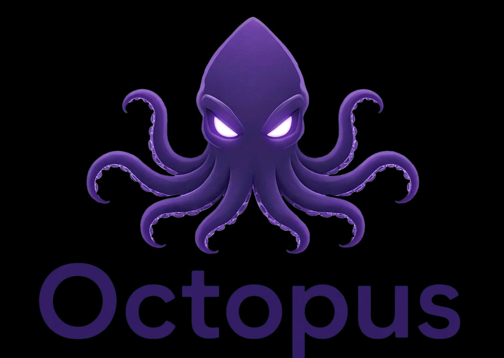

Belum terhubung

OCTOPUSGAME RESEARCH & CONTROL STUDIO
Uji game milikmu
dengan aman.
Analyzer, rule sandbox, dan simulator generik untuk riset internal.
Workspace
ⓘ
Mode riset aman
Gunakan hanya pada game, API, dan aset yang Anda miliki atau berwenang menguji.
OCTOPUS / CONTROL CENTER
Control Center
Belum ada hasil
IDLE
Belum ada probe
Pilih asset gambar
Memuat status…Buka workflow QA →
ⓘ
Batas aman
Adapter engine non-Web adalah contract sandbox sampai SDK resmi dipasang di build game milik sendiri. Control Center tidak memodifikasi game produksi.
OCTOPUS / SEARCH
Search Engine
Mencari...
OCTOPUS / BROWSER
Browser
Beberapa situs memblokir iframe. Gunakan tombol buka hasil pencarian untuk membuka situs di tab baru.
OCTOPUS / WORKSPACE
A/C Studio
01
Input koneksi
Hubungkan ke endpoint game milik sendiri atau gunakan mode manual.
Mode AUTO membutuhkan CORS dan otorisasi dari server game Anda.
API Request BuilderRESEARCH
Network log
02
Symbol engine 0
Upload aset dan atur konfigurasi symbol secara dinamis.
Tarik gambar ke siniatau klik untuk memilih aset • PNG/JPG/WebP
Symbol Visual ControlsENGINE
03
Rule builder
Buat rule simulasi tanpa menyentuh sistem produksi.
Advanced Rule BuilderAND / OR
04
Reel simulator
Preview lokal untuk 3×3, 5×3, atau 6×5. Data hasil bukan representasi RNG produksi.
Game math sandboxREPRODUCIBLE
Paytable multiplier (3+ symbol)
05
Security audit
Checklist pasif untuk endpoint milik sendiri—tidak melakukan brute force atau eksploitasi.
Masukkan endpoint, lalu jalankan pemeriksaan konektivitas dan header yang aman.
Full passive auditSAFE CHECKS
Audit hanya memeriksa konektivitas, header, auth-status, schema, dan timing secara pasif.